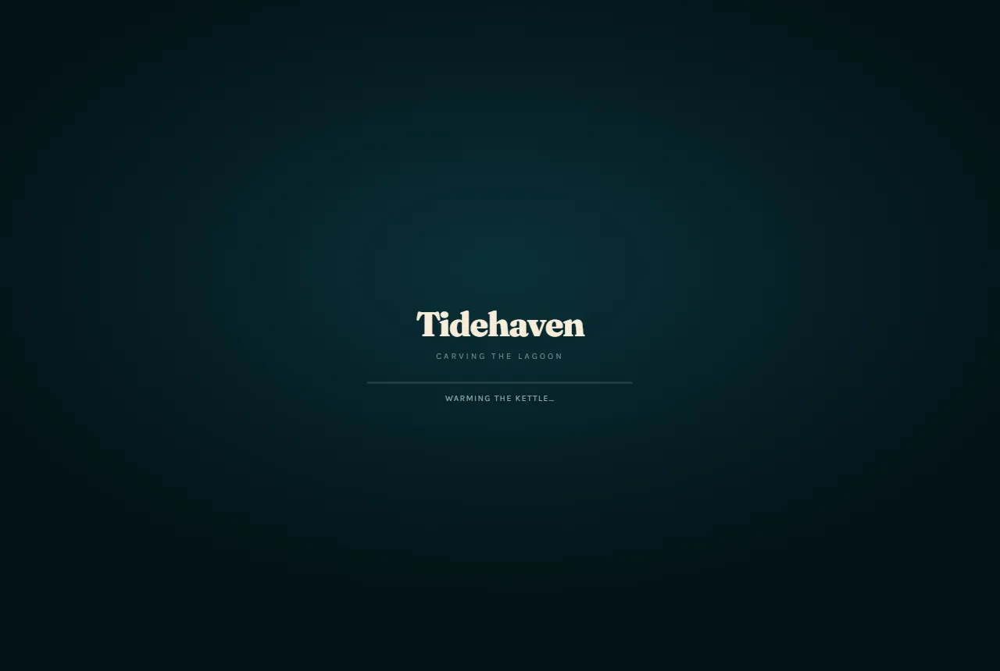

Те же тесты, что прошла Swift 1.5 (её страница), — на исходной модели Qwen3.8-Flash-Next в том же кванте NVFP4 + Q8 и с теми же настройками движка DACAN: один и тот же промт при каждой температуре от 0.1 до 1.5 и по три одинаковых запроса на каждую пару температуры и зерна. У каждого прогона — файл, который можно открыть и скачать, снимок и цифры. Страницы обновляются сами по мере прогонов.

Tidehaven: температура × зерноCreate Tidehaven, a beautiful interactive 3D diorama of a small coastal island using Three.js + WebGL.по 3 одинаковых запроса на пару · зёрна 7, 8, 9 · 0.1–1.5 · с 2026-10-22 · идёт: 111 из 135 прогоновTidehaven — остров-диорамаCreate Tidehaven, a beautiful interactive 3D diorama of a small coastal island using Three.js + WebGL.15 прогонов · температура 0.1–1.5 · зерно 7 · в очереди: начнётся вторым, после «Tidehaven: температура × зерно»Пеликан: температура × зерноCreate svg image of a pelican riding a bicycleпо 3 одинаковых запроса на пару · зёрна 7, 8, 9 · 0.1–1.5 · 135 прогонов · в очереди: начнётся третьим, после «Tidehaven — остров-диорама»Пеликан на велосипедеCreate svg image of a pelican riding a bicycle15 прогонов · температура 0.1–1.5 · в очереди: начнётся четвёртым, после «Пеликан: температура × зерно»